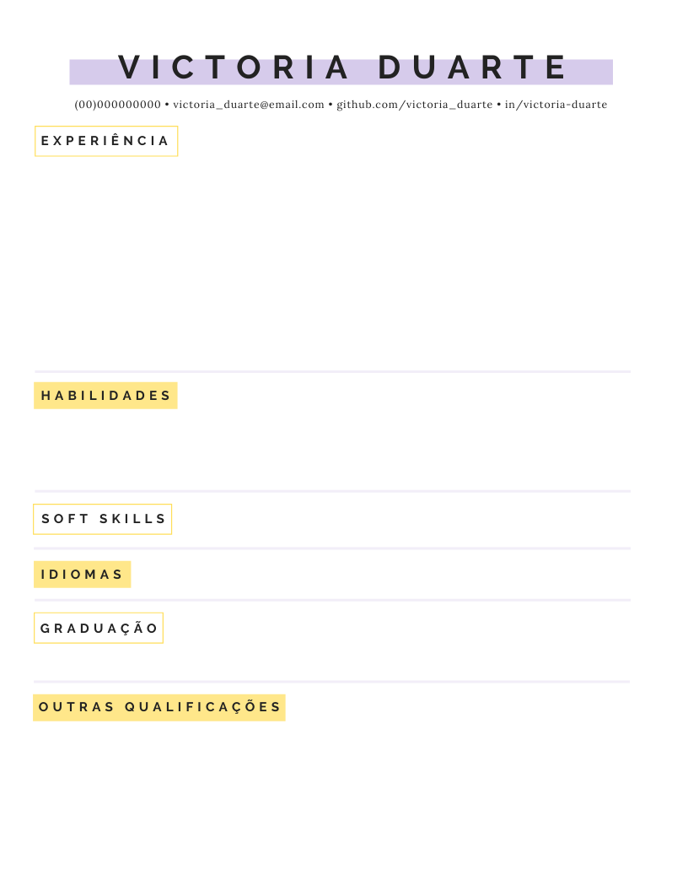
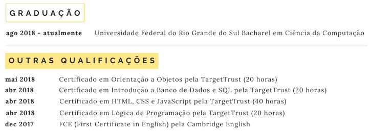
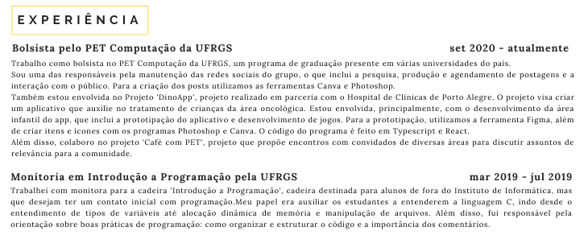
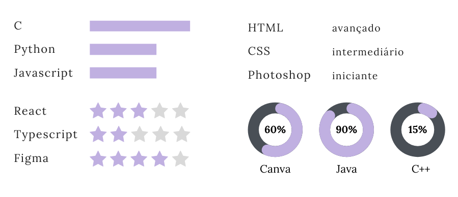
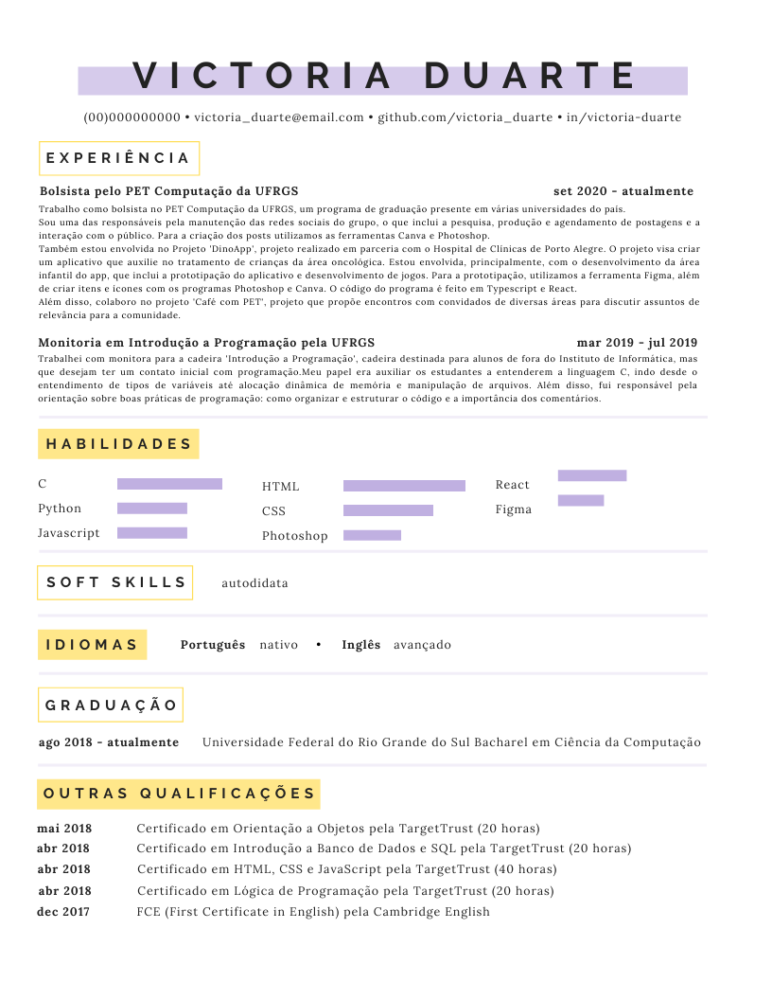

Revisado por Afonso Ferrer
Introdução
Currículo é uma palavra bem assustadora para muita gente. Só de ouvir já dá um calafrio. Mas, fazer um currículo é bem mais simples do que parece! Esse tutorial vai construir um currículo passo a passo e compartilhar algumas dicas.
Estruturando o Currículo
O que é essencial de se ter em um currículo?
- Nome completo
- Algum meio de contato: normalmente se coloca telefone, email e linkedin. Para área da programação, é interessante colocar o github.
- Idiomas
- Educação / Certificações
- Experiência
- Habilidades
Coisas que você não precisa colocar em um currículo a não ser que explicitamente solicitadas pela empresa contratante
- Foto
- Endereço
Essas informações às vezes podem ser usada para fazer um filtro prévio pelo perfil socioeconômico do candidato, sem se preocupar em avaliar a competência dele
Estruturando o Currículo
Layout e design
No geral, costuma-se colocar nome e informações pessoais na parte superior da página, deixando as informações relacionadas a qualificações e competências na parte inferior. Recomenda-se colocar a experiência primeiro, seguida por habilidades e qualificações. Mas, não há uma regra específica para a distribuição, desde que o currículo seja claro. O design costuma ser simples, a ideia do currículo é ser um documento formal objetivo e sucinto e, por esse motivo, o ideal é evitar muitas cores ou fontes chamativas.
Exemplo de estruturação de currículo

Note que, no exemplo, como a candidata é programadora, é relevante colocar seu github
Preenchendo o currículo
Tamanho
Evite ao máximo passar de uma página com seu currículo. A única situação em que isso é desejável é se o candidato tiver muitas qualificações diretamente relacionadas ao cargo de interesse.
Preenchendo o currículo
Educação / Certificação
Nessa área deve ser colocado formações, cursos e certificados. É importante acrescentar o período de duração ou a data de aquisição da formação, curso ou certificado. A ordem ideal é sempre o evento mais atual em cima.
Não é relevante colocar o ensino médio, a não ser que este seja integrado com um curso técnico que seja relevante para o cargo desejado.
Exemplo:
Uma pessoa atua na área de programação, mas tem um técnico integrado em química. Essa informação é relevante caso ela vá atuar em uma empresa de produção de produtos químicos, por exemplo, mas não em uma rede de hotéis.
No currículo
[]
A candidata optou por separar a graduação de outros certificados, assim dando maior destaque para o que ela considera mais relevante
Preenchendo o currículo
Experiência
É interessante colocar uma breve descrição da sua atuação dentro do emprego / estágio / bolsa. Pensando em termos de espaço, as experiências mais antigas podem ter uma descrição mais sucinta, por acabarem sendo menos relevantes que as mais atuais.
Também vale destacar as experiências que sejam mais relevantes para o cargo de interesse, explicando com um pouco mais de detalhes seu papel. Para pessoas com pouca experiência, no entanto, qualquer experiência, mesmo que não profissional, pode ser colocada, desde que acrescente conteúdo relevante ao currículo.
A ordem ideal é sempre o evento mais atual em cima.
Fazer parte do RH da escola é uma experiência interessante, que pode mostrar suas habilidades em administrar ou organizar eventos, lidar com documentos e em liderar.
No currículo
[]
Preenchendo o currículo
Habilidades
Embora não seja necessário, é possível colocar o quanto você sabe de uma determinada habilidade e há várias formas de representar isso: palavras simples, barras de progresso, estrelas entre outros. O importante é manter um único formato.
Também é relevante colocar soft skills.
No currículo

Currículo Completo

IMPORTANTE: Evite erros de português, pois eles depreciam o currículo
Guia de Linkedin
O Linkedin é como se fosse um currículo online. No entanto, ao invés de termos uma página, temos um scroll. Isso permite colocar mais informações que no currículo.
Lembre-se da foto e do banner!
Uma foto e um banner na sua página deixam seu linkedin com uma cara bem mais ativa e, portanto, tendem a atrair mais empresas.
Seções
- Sobre: de um mini resumo da sua experiência e das suas habilidades.
- Experiência: é muito interessante colocar uma descrição com um pouco mais de detalhes sobre o que foi feito em cada projeto/empresa. Um scroll grande não é um problema!
- Competências e recomendações: todas as tecnologias que você já tiver tido um certo contato são válidas de serem colocadas, mesmo que faça algum tempo que você mexa com elas.
É muito interessante também fazer os testes de competência oferecidos pelo próprio Linkedin, pois é pequena certificação de que você de fato tem aquele conhecimento.
Lembre-se de recomendar as competências de quem você conhece. Isso ajuda muito!
ATENÇÃO
Cuidado com muitos empregos de poucos meses. Isso costuma ser encarado como uma red flag para os recrutadores, pois eles não tem certeza se você vai ficar muito tempo com a empresa deles.